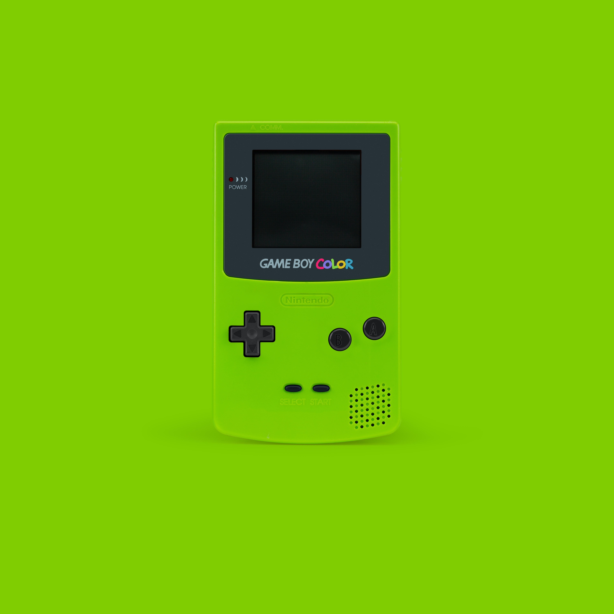

Farbenfrohe Neuigkeiten

Ein Stückchen Himmel in Händen halten mit der blauen Version des Game Boy Color.

Näher an der Natur sein während des Gamings? Möglich mit dieser Version des Game Boy Color.

Mal was Verrücktes wagen? Den Game Boy Color gibt es nun auch in Lila. Super verrückt!

Dortmund-Fan oder einfach nur farblich verirrt? Dann greif zu beim gelben Game Boy Color!